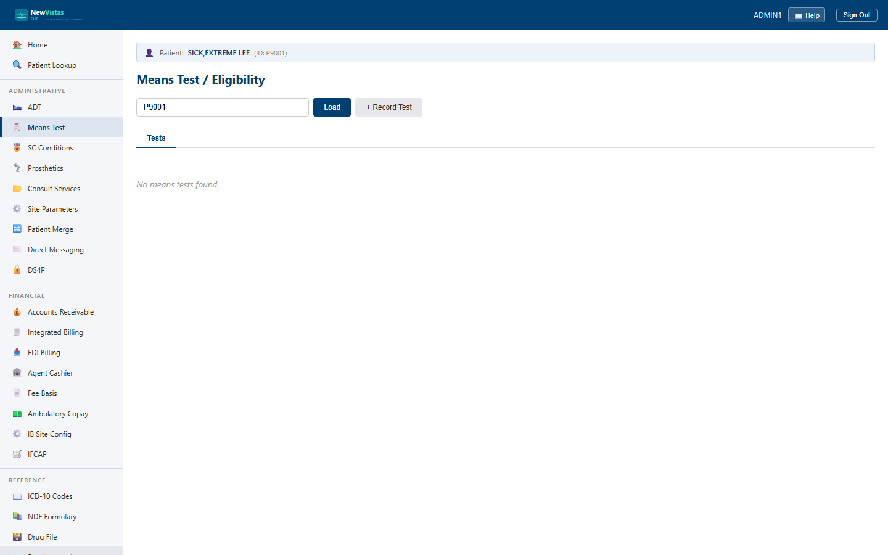

Manual › Administrator › Means Test
Means Test / Eligibility
The Means Test screen records a veteran's financial assessment — income, net worth, dependents, deductible expenses, and the resulting copay and eligibility determination. Each test is a record you can open and build up section by section, mirroring VistA's Income Verification / Means Test process.
Open Means Test and load a patient
- In the sidebar, under Administrative, click Means Test (or go to
/means-test). - In the Patient ID field, type the patient ID (e.g.
P9001). - Click Load (or press Enter) to list that patient's means tests.

What you see
- Tests tab — every test on file, with its date, type, income, net worth, dependents, priority group, eligibility, and a status badge.
- Status badge — green COMPLETED or amber for any other status.
- Detail tab — appears once you open a test; shows the full computed picture (adjusted income, GMT threshold, hardship, copay result) plus the section forms.
Record a new means test
- Click + Record Test to open the form.
- Pick the Test Type (Means Test, Copay Test, Hardship, or GMT Threshold) and set the date.
- Enter annual income, net worth, number of dependents, priority group, eligibility status, and who completed it.
- Click Record. The new test appears in the list.
Build up a test's detail
Click any row to open the Detail tab, which has a stacked set of section forms:
- Income, Assets, and Expenses — record the veteran, spouse, and dependent figures.
- Calculate Adjusted Income — one click computes adjusted income from what you've entered.
- GMT Threshold, Hardship Determination, and Copay Test Result — set the geographic threshold and the final determinations.
- Dependents — list and add dependents with name, relationship, DOB, income, and net worth.
Order matters
Record income, assets, and expenses first, then click
Calculate Adjusted Income — the adjusted figure is derived
from those entries, so calculating before they're in place gives an
incomplete result.